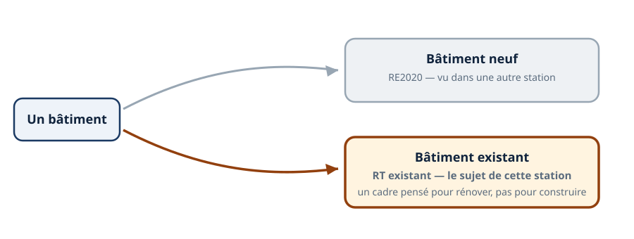
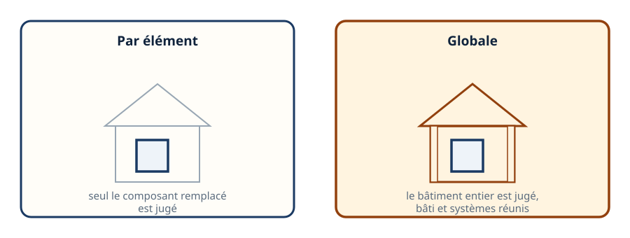
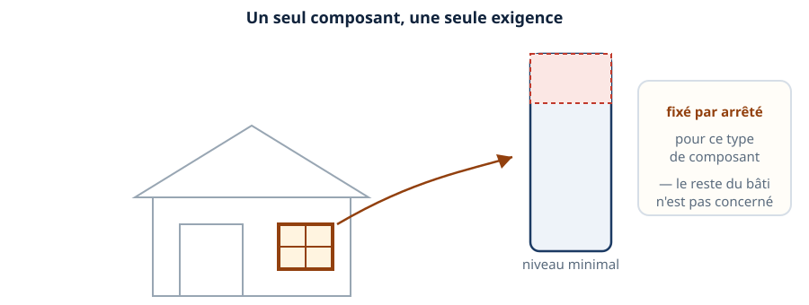
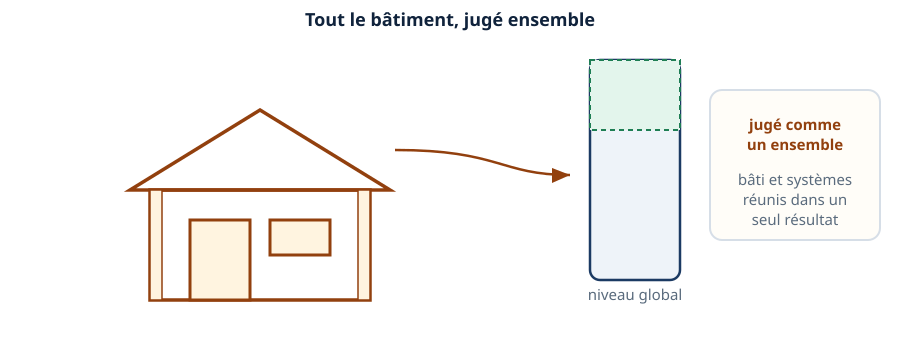
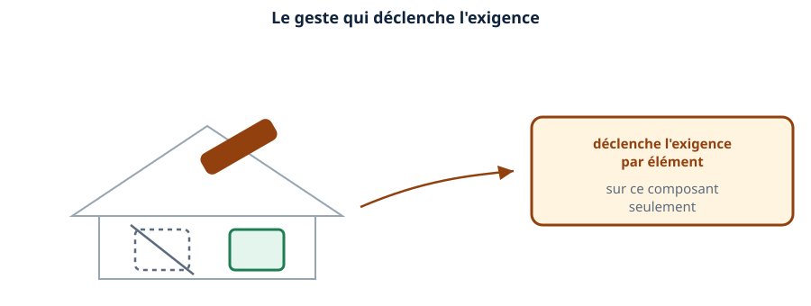
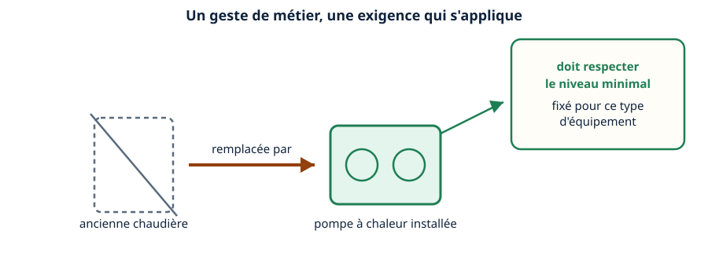
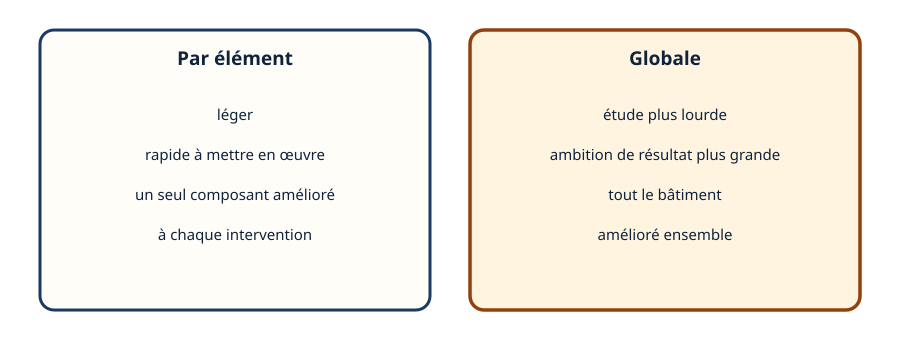
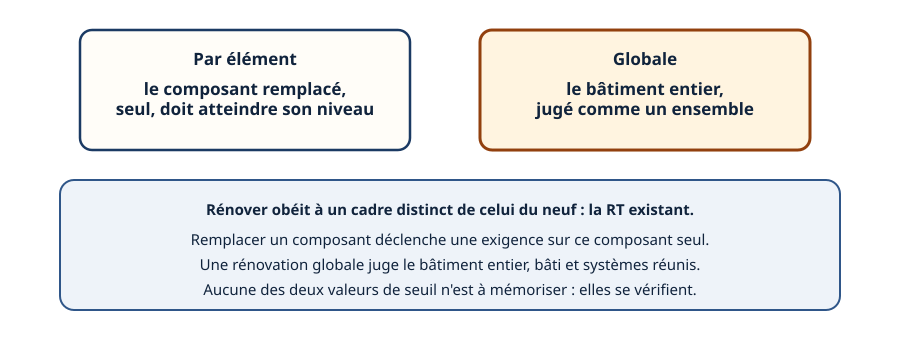

Mini-station commentée · 8 écrans et 4 questions · environ 10 minutes
Objectif
À la fin de la station, vous savez que rénover obéit à un cadre distinct du neuf, vous distinguez la rénovation par élément de la rénovation globale, et vous savez ce que remplacer un équipement déclenche concrètement pour vous.
Chaque écran peut être expliqué à voix haute : le bouton « Écouter » commente ce que vous voyez. Rien n'est dit qui ne soit aussi écrit.
1 / 12
Écran 1 sur 8
Rénover : un cadre différent du neuf
La RE2020, vue dans les stations précédentes, s'applique aux bâtiments neufs. Un bâtiment déjà construit relève d'un cadre distinct, la RT existant.
Ce n'est pas une simple version allégée de la RE2020 : c'est un cadre pensé spécifiquement pour les travaux sur l'existant — remplacer, isoler, rénover.

Un cadre pensé pour rénover, pas pour construire.
Écran 2 sur 8
Deux logiques : par élément ou globale
La RT existant se décline en deux logiques. La rénovation par élément : on remplace un composant, seul ce composant est jugé. La rénovation globale : on rénove tout ou une grosse partie, c'est le bâtiment entier qui est jugé.
Les deux écrans suivants détaillent chacune de ces logiques.

Un seul composant jugé, ou tout le bâtiment jugé ensemble.
Écran 3 sur 8
La rénovation par élément
Quand on remplace un seul composant — une fenêtre, une chaudière, une isolation de toiture — ce composant doit atteindre un niveau de performance minimal, fixé par arrêté pour son type.
Le reste du bâtiment n'est pas concerné : c'est une exigence ciblée, pas une exigence sur l'ensemble.

Un seul composant, une seule exigence — le reste du bâti n'est pas concerné.
Écran 4 sur 8
La rénovation globale
Quand les travaux portent sur tout ou une grosse partie du bâtiment, la performance est jugée au niveau du bâtiment entier — bâti et systèmes réunis dans un seul résultat, sur une logique proche de celle du neuf.
C'est une démarche plus ambitieuse, et une étude plus lourde qu'une simple rénovation par élément.

Le bâtiment jugé comme un ensemble, pas composant par composant.
Écran 5 sur 8
Le mécanisme du déclenchement
C'est le geste de remplacement lui-même qui déclenche l'exigence par élément. Changer une chaudière, poser une isolation, remplacer des fenêtres : chacun de ces gestes active la règle, sur ce composant précis.
Il n'y a pas besoin d'un projet de rénovation globale pour être concerné : une seule intervention suffit à déclencher l'exigence sur elle-même.

Le geste de remplacement déclenche l'exigence, sur ce composant seul.
Écran 6 sur 8
Le climaticien concerné : à chaque remplacement
Quand vous remplacez une chaudière par une pompe à chaleur, ou que vous installez un nouvel équipement, c'est votre intervention qui déclenche l'exigence par élément — pas un projet de rénovation décidé ailleurs.
L'équipement posé doit respecter le niveau minimal fixé pour son type. C'est un point à vérifier avant de proposer un devis, pas après.

Le remplacement que vous faites déclenche l'exigence, directement.
Écran 7 sur 8
Pourquoi la distinction compte pour le client
Une rénovation par élément est légère et rapide, mais elle ne garantit pas une amélioration d'ensemble : chaque geste isolé peut être conforme sans que le bâtiment progresse beaucoup au global.
Une rénovation globale demande une étude plus lourde, mais vise un résultat d'ensemble — souvent utile quand le client cherche une vraie amélioration, par exemple avant une vente ou une mise en location.

Léger et ciblé, ou lourd et ambitieux : le choix dépend du besoin du client.
Écran 8 sur 8
Bilan et le réflexe
Rénover obéit à un cadre distinct du neuf : la RT existant.
La rénovation par élément juge uniquement le composant remplacé.
La rénovation globale juge le bâtiment entier, bâti et systèmes réunis.
C'est le geste de remplacement qui déclenche l'exigence — directement votre intervention.
Le réflexe : un composant remplacé engage ce composant ; un projet global engage tout le bâtiment.

Deux logiques, un même cadre distinct du neuf.
Question 1 sur 4
Un bâtiment déjà construit relève de quel cadre ?
Rappel de l'écran 1 — un cadre distinct du neuf.
Question 2 sur 4
Remplacer une seule chaudière : qu'est-ce qui est jugé ?
Rappel de l'écran 3 — un seul composant, une seule exigence.
Question 3 sur 4
Qu'est-ce qui déclenche l'exigence par élément ?
Rappel de l'écran 5 — le geste de remplacement lui-même.
Question 4 sur 4
Quelle différence pour le client, entre les deux logiques ?
Rappel de l'écran 7 — léger et ciblé, ou lourd et ambitieux.
Les correspondances de la station
Le confort d'été (même sous-ligne)
— le confort d'été compte aussi dans les projets de rénovation.
Le DPE (même sous-ligne)
— un DPE défavorable pousse souvent vers ces travaux de rénovation.